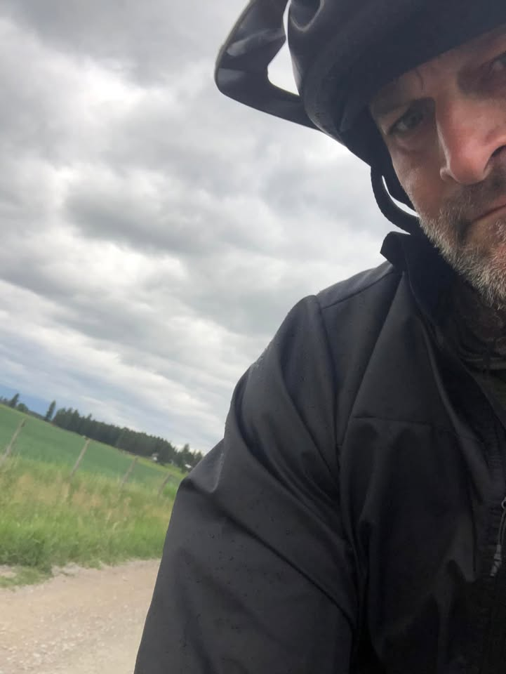
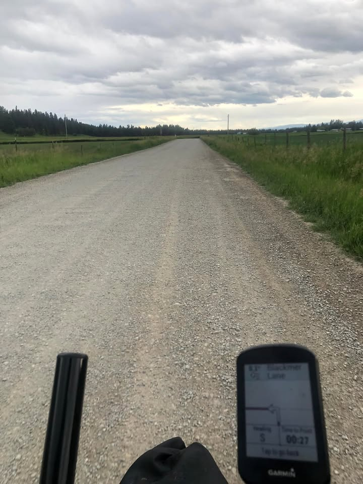
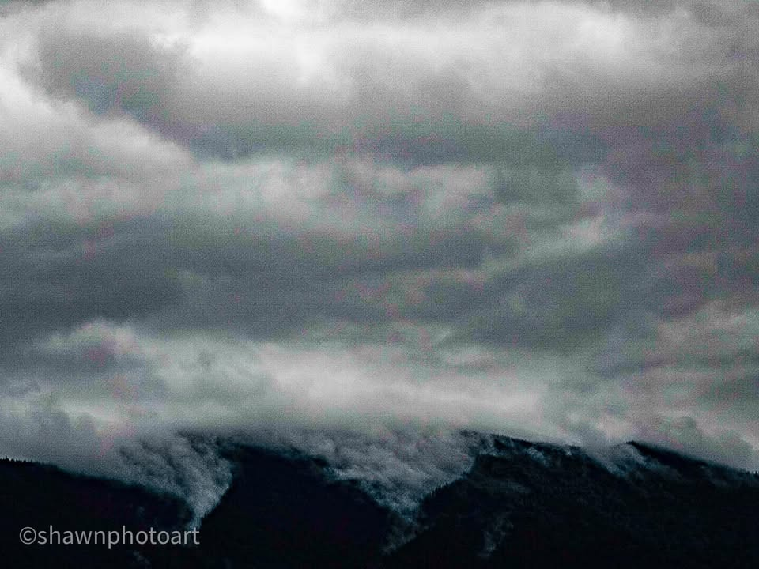
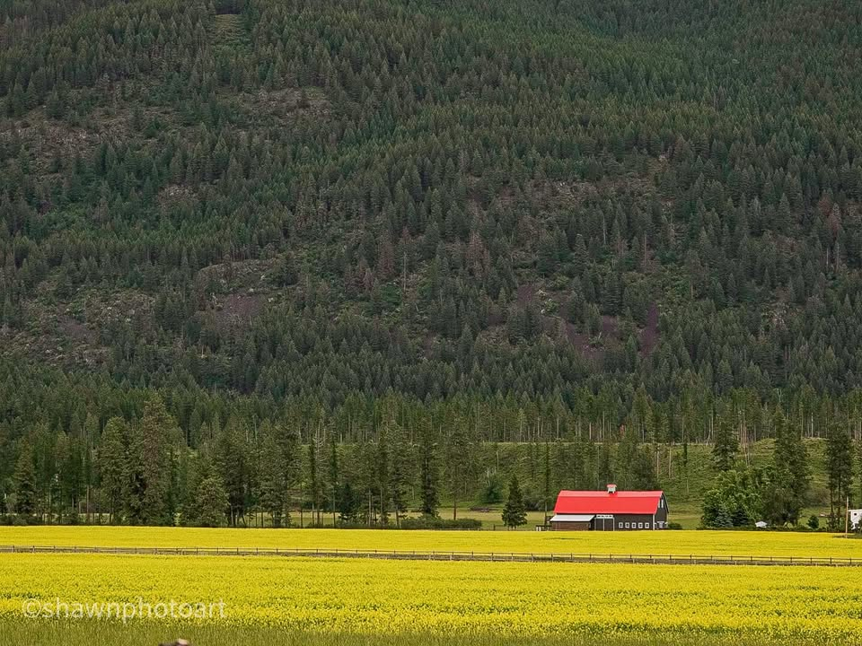
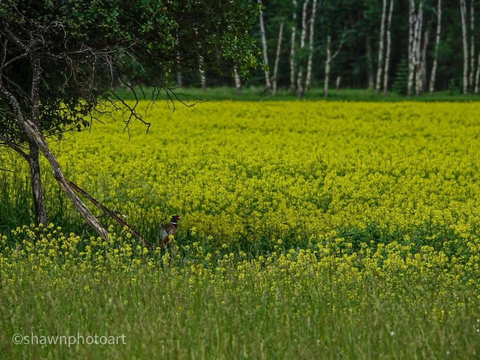
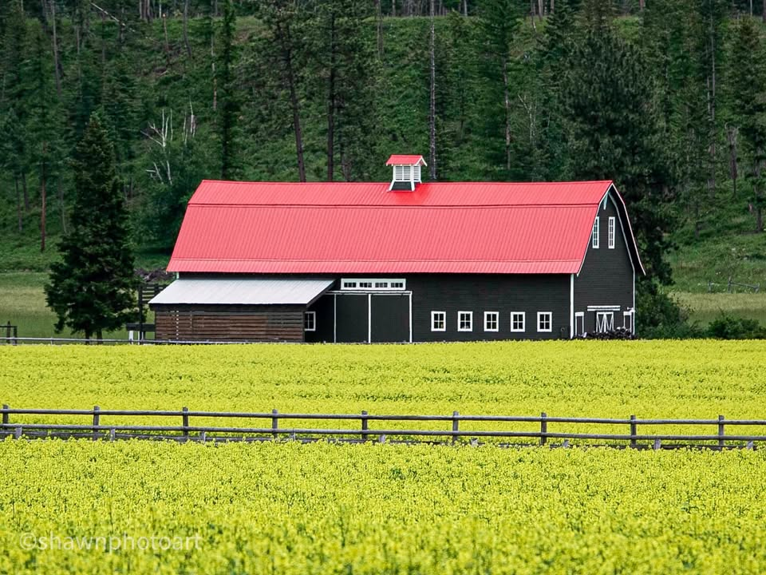
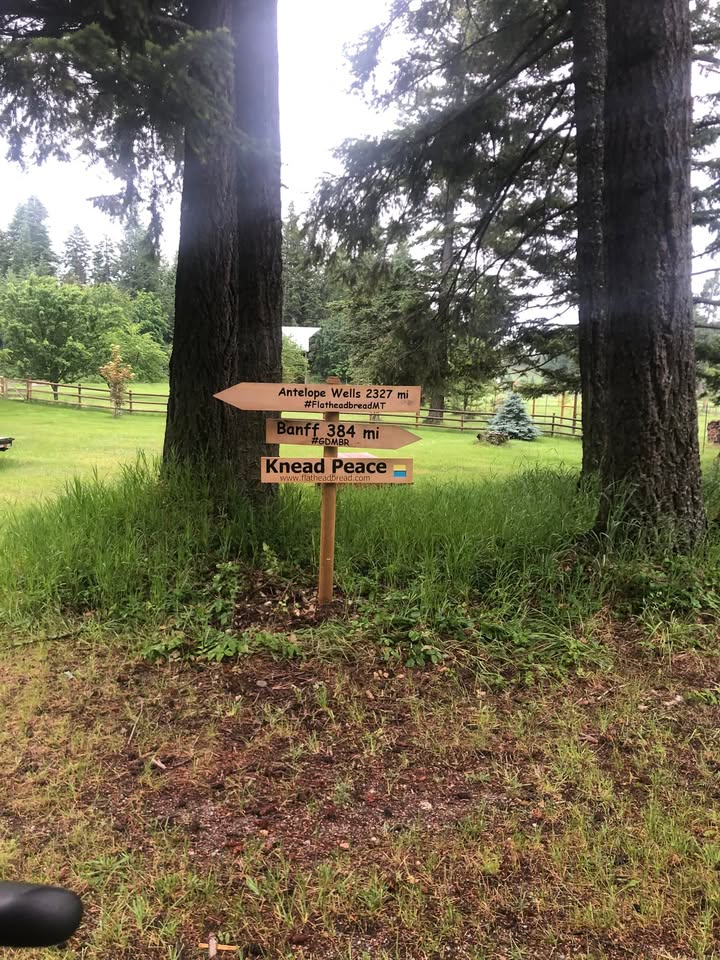

Day 6.. rain on a big downhill, Quick town stop, Montana mountain country roads, trail Angels

From the Journey
Hearing the Rain on the tent all night. I knew that when I woke up that everything would be wet. Luckily, when I decided to get out of bed, it wasn’t actively raining but, I knew it wasn’t far away. Boiling some hot water for coffee I got an early start packing so that I could get it done before the rain came. My other two camp mates were not so lucky. There was a couple times briefly where the sun was trying to peek through the clouds, but didn’t quite make it. It would’ve made for a great picture. Downing my coffee, I made it out before they did just as the rain started to pick up.

From the Journey
I had about a 30 mile mostly downhill route into whitefish, Montana. It will be a nice break from trudging uphill. However, easily reaching speeds between 20 and 30 miles an hour. I quickly realized that the light drizzle felt like tiny cold Knifes hitting when it my face. Also, the temperature has dropped, and the wind chill going downhill started to freeze my hands and chilled me to the bone. I ended up stopping and putting my rain jacket on over my windbreaker, tucking on both up under my helmet and putting on my warm gloves. Keeping the speeds down to 20 miles an hour helped out a lot. 30 miles seem to fly by and even though the dirt road was really good the paved road into town was welcoming.

From the Journey
Whitefish, Montana with a population of around 7800 is a touristy outdoors town that had lots of restaurants to choose from, along with bike shops, and other establishments. I found myself at a bar and pub for two beers, big bowl of chicken teriyaki, and teriyaki green peppers. After that, I hit up the local bike shop and was able to find a small bag for my bicycle emergency equipment. That freed up another cage on my front tire for when I need to carry more water. I also borrowed a tool to move around my front rack in order to get a little bit more space for my front bag. It made a big difference. Heading out of town I stopped at a juice oatmeal stand and got a blueberry oatmeal thing for the road and stuck it in my newly freed up bike cage.

From the Journey
I was able to get another 30 miles down the road. Paved Mountain Farm Roads, spotted with houses on each side made for a nice smooth day. On the map ahead, showed a friendly house to bikers where I could camp but I did wanna get a little bit further down the road. I had heard rumors from a other racer that in about another 8 miles or so there was the house of Tom and Wendy. Very hospitable couple who has opened their house up to racers and divide riders. Tom is an engineer with an impressive workshop, and is starting to put together a custom turntables. Wendy is a baker who owns (Flatheadbread Dot com) A bakery. When I arrived, she was busy baking up bread in the oven. She also identified the yellow flowers in one of the pictures as canola flowers or rapeseed. This is what canola oil is made out of.

From the Journey
They’re not on the Adventure, cyclist, association, maps. But they’re located about 8 to 9 miles from Swan River intersection and there is a sign i n their yard with some mileage markers.

From the Journey
Running into super kind people open their doors to Travelers brings back hope and faith in others. And it brings our big world closer.

From the Journey
#gdmbr #whitefishMontana #biketraveler #PhotographerMontana #Greatdividemountainbikeride
#Continentaldivide #Travelphotographer #Adventurecycling